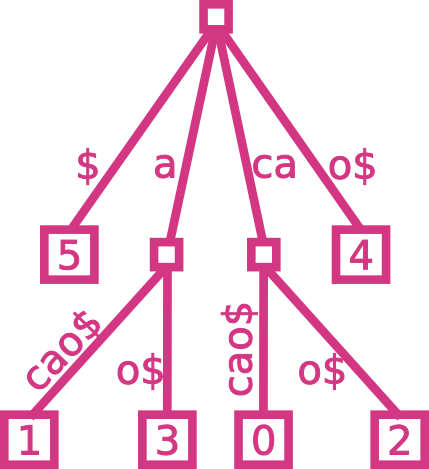

|  |
suffix-tree
suffix-tree is a Haskell implementation of a suffix tree, a beautifully efficient and powerful data structure for string processing.
This implementation constructs in linear time, using a sequence of three algorithms (first, construct a suffix array, then an array of pair-wise adjacent least-common-prefix length values and a modified Cartesian tree on that array, and from those two, the suffix tree itself).
It was written in May 2014 and is located here.
|